|
Dynamiques d'utilisation des terres de la PampaAuteurs :
Ce modèle est développé dans
le cadre du projet ADD
Trans. Il est le fruit de plusieurs réunions de
travail et est le résultat de l'évolution de
plusieurs versions, même s'il reste encore
inachevé. Ce modèle illustre des dynamiques croisées d'utilisation de la terre (culture du soja ou élevage) et dans le même temps de la location et de l'achat de parcelles foncières. L'objectif a été de formaliser des connaissances sur ces aspects et de comprendre les relations entre les producteurs traditionnels et l'apparition dans ce secteur de nouveaux utilisateurs représentants les intérêts de fonds de pension. La stratégie de ces derniers consiste à louer les terres pour produire du soja de façon intensive et pas forcément durable. Mais si les producteurs traditionnels (petits, moyens et grands) ont un penchant historique pour l'élevage extensif, ils ne sont pas insensibles pour autant à des pratiques plus rentables. Description du modèleLe diagramme de classes ci-dessous (en espagnol) présente les principales entités du modèle. La partie de droite regroupe les parcelles et leurs couvertures. Les parcelles (100 ha) peuvent être louées ou vendues (valeur fixe de 3000 pesos/ha). Lorsqu'elles sont inexploitées, elles sont en jachère; l'exploitation consiste alors à choisir entre l'élevage (Ganado) ou le soja. Chaque culture a un coût et un prix qui évoluent en fonction du marché. La partie gauche présente les agents du modèle, les producteurs qui se divisent en deux types : l'entreprise (fonds de pension) et les producteurs plus traditionnels. Seuls ces derniers possèdent la terre : relation ”tien” dueño <-> propiedad. En fonction de la taille de chaque propriété, on subdivise les producteurs familiaux en petits (chicos), moyens (medianos) et grands propriétaires (grandes). Ce sont également les seuls agents qui peuvent vendre et acheter la terre car ce n'est pas la stratégie de l'entreprise. Par contre n'importe quel agent peut utiliser la terre pour produire : il gère alors son exploitation (relation ”maneja”, usuario <-> explotacion) en produisant du soja ou de l'élevage selon ses préférences. L'entreprise (Empresarial) choisit systématiquement d'implanter du soja pour lequel elle possède une technologie plus avancée qui lui procure une productivité de 30% supérieure.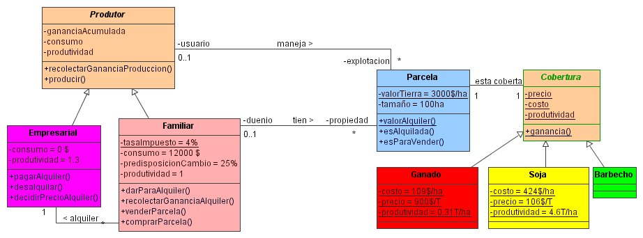 Le diagramme d'activité suivant décrit l'ensemble des activités qu'un producteur peut exécuter pendant une année. Ce diagramme est subdivisé en trois parties
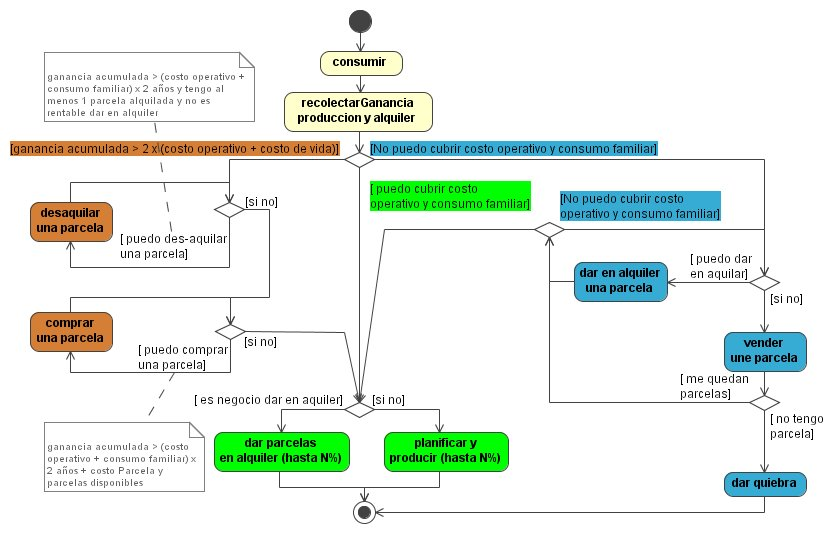 Les activités de l'entreprise sont beaucoup plus simples. Chaque année, elle produit du soja sur les terres qu'elle loue. Elle récupère des parcelles à louer lors des activités des producteurs (méthodes ”dar en alquiler” du producteur), mais elle n'est pas proactive pour cette démarche; elle peut juste refuser de louer si les gains espérés du soja sont inférieurs au loyer et rendre des parcelles dans ce cas. Par contre, selon les scénarios testés, elle peut déterminer le marché de la location. Le déroulement annuel d'un pas de temps est décrit par le diagramme de séquence suivant : 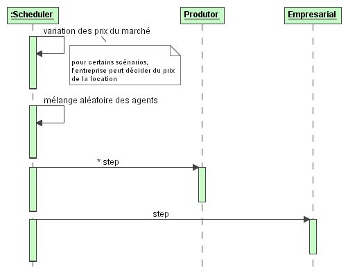 Quelques résultats
Scénario A :Un premier scénario met en œuvre un mécanisme aléatoire de fluctuation des prix du soja et de la viande (basés sur une série de 6 années). Les tarifs de la location suivent celui du soja : 35 % du prix du soja avec un décalage d'un an (init_MercadoPreciosAleatorios).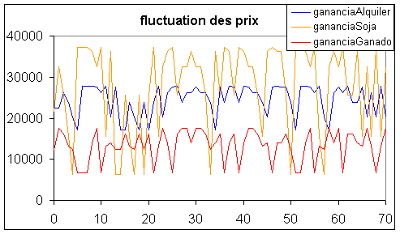 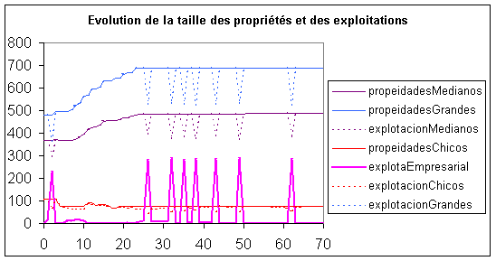 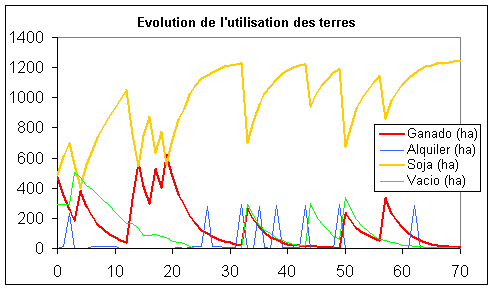 Scénario B :Tous les prix du marché fluctuent régulièrement. Les tarifs de la location suivent celui du soja de l'année précédente (init_MercadoSinus). Le marché fluctue selon l'équation suivante : 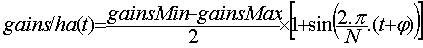 avec :
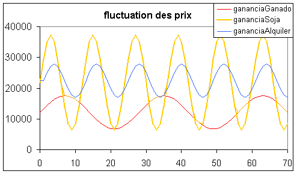 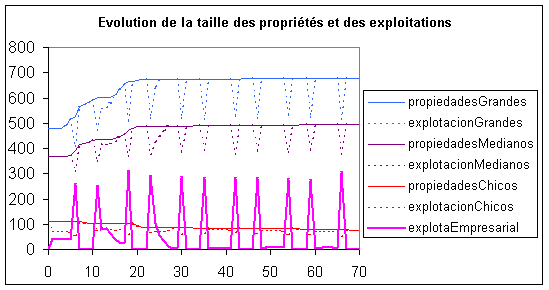 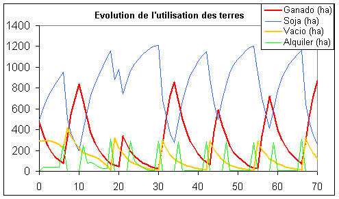 Scénario C :Le prix du soja augmente : il suit une sinusoïde croissante de +1$ par an. L'entreprise fixe les tarifs de la location à 1 $ de plus que le prix de la meilleure couverture (init_MercadoPreciosAumentendo)
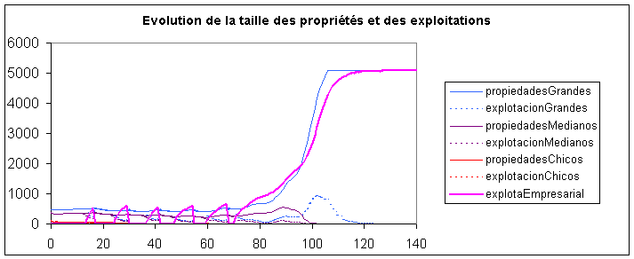 Scénario D :Augmentation linéaire du prix du soja. L'entreprise fixe les tarifs de la location. (init_ MercadoPreciosAumentendoLinear)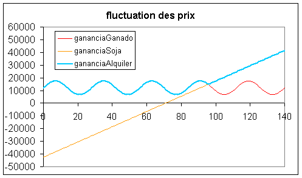 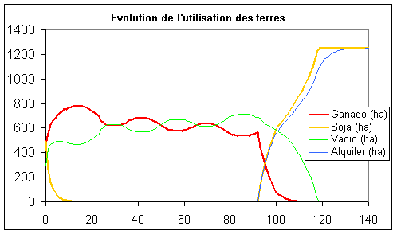 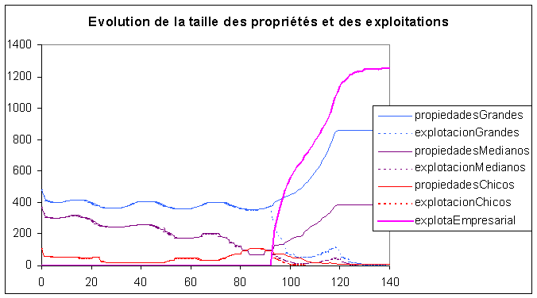 Analyse de sensibilité :Evolution du nombre de familles (et de leurs types) en fonction du taux d'imposition annuel (Basé sur scénario A). L'impot annuel dépend de la taille de la propriété = taillePropriété x tauxImposition. 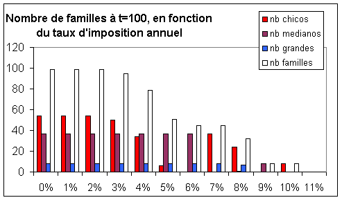
|